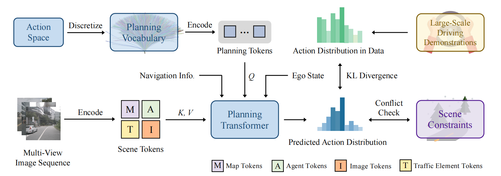

VADv2 takes multi-view image sequence as input in a streaming manner, transforms sensor data into environmental token embeddings, outputs the probabilistic distribution of action, and samples one action to control the vehicle. The probabilistic distribution of action is learned from large-scale driving demonstrations. VADv2 is trained on Town03, Town04, Town06, Town07, and Town10, and evaluated on unseen Town05. It runs stably in a fully end-to-end manner, even w/o rule-based wrapper.
@article{chen2024vadv2,
title={Vadv2: End-to-end vectorized autonomous driving via probabilistic planning},
author={Chen, Shaoyu and Jiang, Bo and Gao, Hao and Liao, Bencheng and Xu, Qing and Zhang, Qian and Huang, Chang and Liu, Wenyu and Wang, Xinggang},
journal={arXiv preprint arXiv:2402.13243},
year={2024}
}
}